Драма
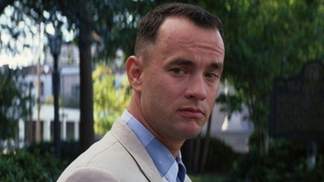
Форрест Гамп
Простой парень из Алабамы проходит через всю историю Америки, доказывая, что искренность и доброта могут изменить мир. Его невероятная жизнь вдохновляет на веру в чудеса.
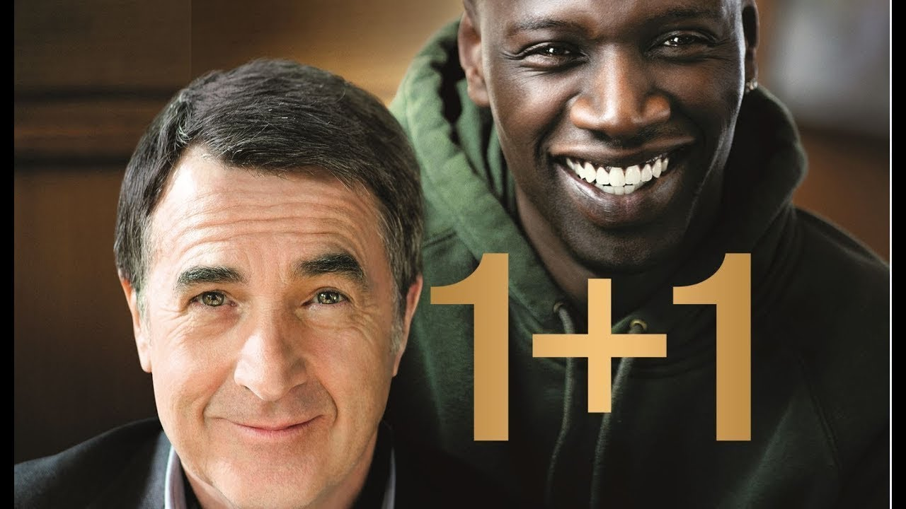
1+1
Аристократ, парализованный после аварии, нанимает сиделкой бывшего заключенного. Их дружба меняет жизни обоих навсегда.

Зеленая миля
Надзиратель тюремной камеры смертников встречает человека с чудесными способностями. Фильм учит видеть добро даже в самых неожиданных людях.
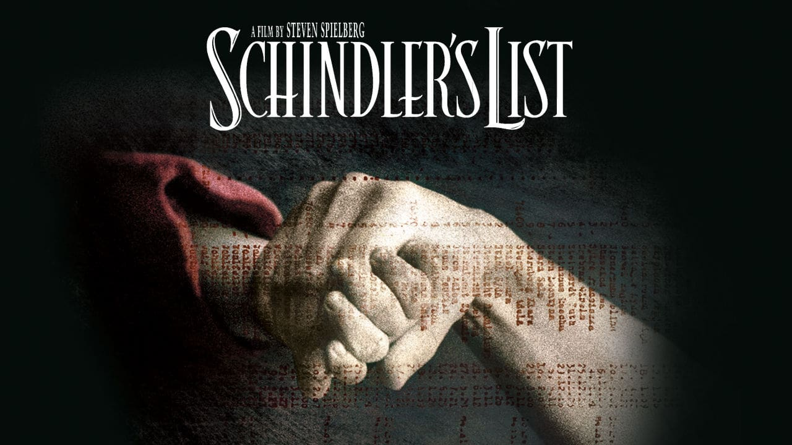
Список Шиндлера
Немецкий промышленник спасает более тысячи евреев во время Холокоста. История настоящего героя, который нашел в себе силы изменить судьбу людей.
Биография

Король говорит
Король Георг VI преодолевает заикание, чтобы стать голосом нации в трудные годы Второй мировой войны. Триумф воли над страхом.

Игра в имитацию
Гений математики Алан Тьюринг взламывает код "Энигмы", сокращая Вторую мировую войну на 2 года и спасая миллионы жизней.

Социальная сеть
История создания Facebook Марком Цукербергом. О том, как одна идея может изменить мир и создать империю стоимостью в триллионы.
Руди
Невысокий парень вопреки всем прогнозам попадает в футбольную команду Нотр-Дам. История упорства и веры в мечту.
Спорт
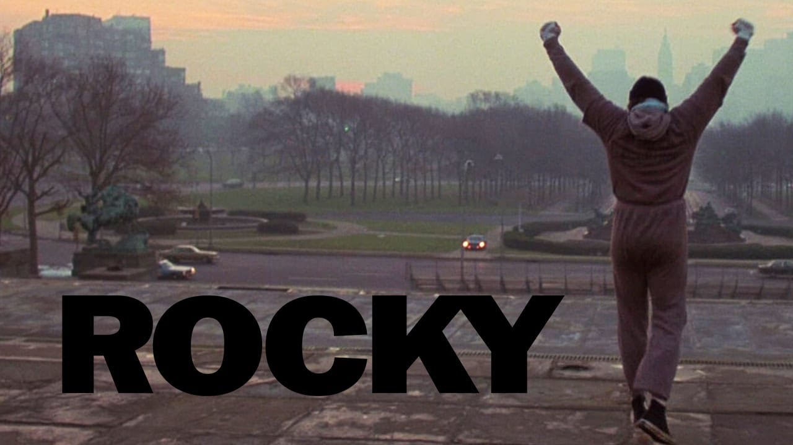
Рокки
Боксер-неудачник получает шанс жизни — бой с чемпионом мира. Классика о тренировках, вере в себя и втором шансе.

Движение вверх
это история победы советской баскетбольной команды над США на Олимпиаде 1972 года через труд, веру и единство.
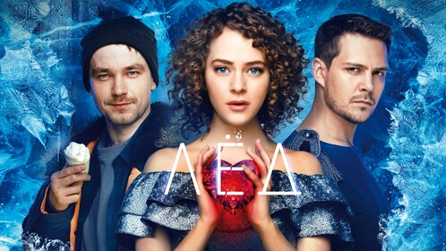
Лёд
это мелодрама о талантливой фигуристке Наде, которая после тяжёлой травмы и из большого спорта с помощью помощи хоккеиста Саши обретает силы вернуться к мечте и любви.
Стрельцов
короткий о талантливом футболисте Эдуарде Стрельцове, который стал звездой сборной СССР, попал в тюрьму и позже почти чудом вернулся в футбол.
Комедия
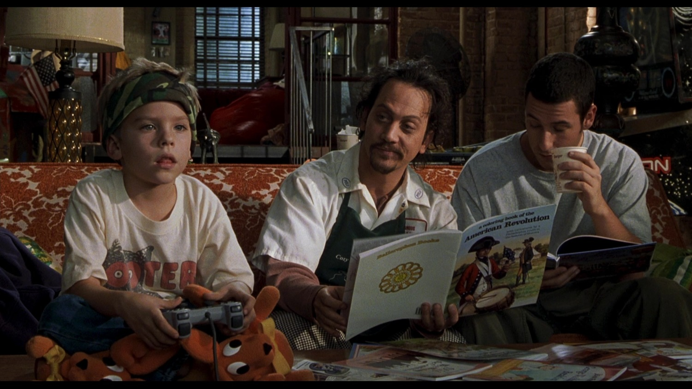
Большой
Мальчик загадывает желание стать взрослым и просыпается в теле взрослого мужчины. Учит ценить детство и настоящие мечты.

Мистер Бин: Отпуск
Неловкий, но добрый Мистер Бин попадает в забавные ситуации, но всегда находит выход. Учит не бояться быть собой.
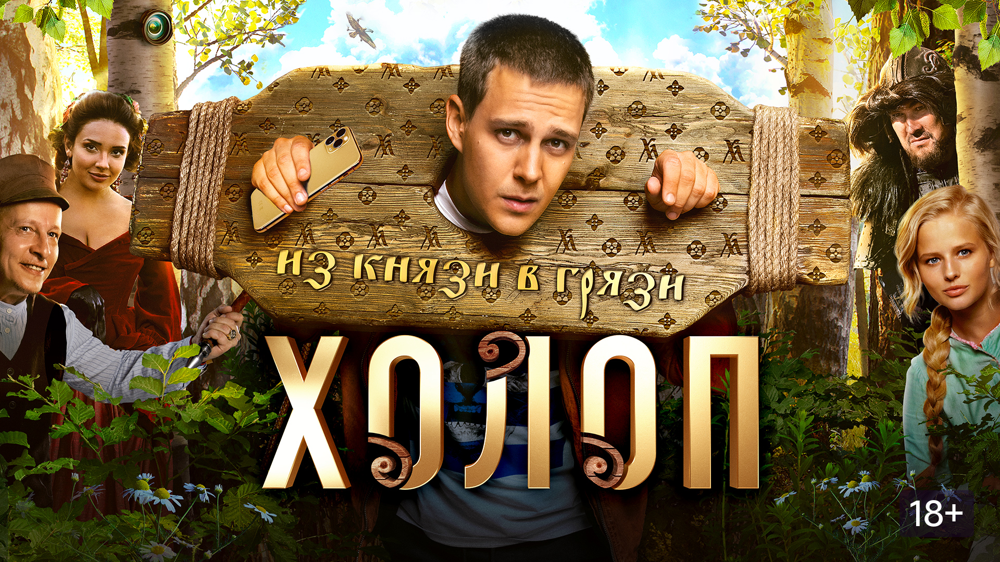
Холоп
это комедия про богатого мажора Гришу, которого из‑за разгульного образа жизни отец отправляет на «перевоспитание» в специально построенную деревню 19‑го века.

Один дома
Мальчик Кевин один дома защищает свой дом от грабителей. Смелость и находчивость побеждают страх.
Фантастика

Звёздные войны: Новая надежда
Люк Скайуокер становится джедаем и спасает галактику. Вера в Силу и борьба за добро вдохновляют поколения.

Назад в будущее
Марти Макфлай путешествует во времени и исправляет ошибки прошлого. Учит ценить семью и настоящие дружеские связи.
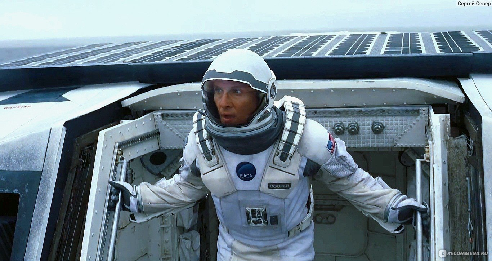
Интерстеллар
Астронавты ищут новый дом для человечества. Любовь сильнее времени и пространства — главная идея фильма.

Матрица
Нео узнает правду о реальности и становится Избранным. Вера в себя меняет весь мир.
Триллер
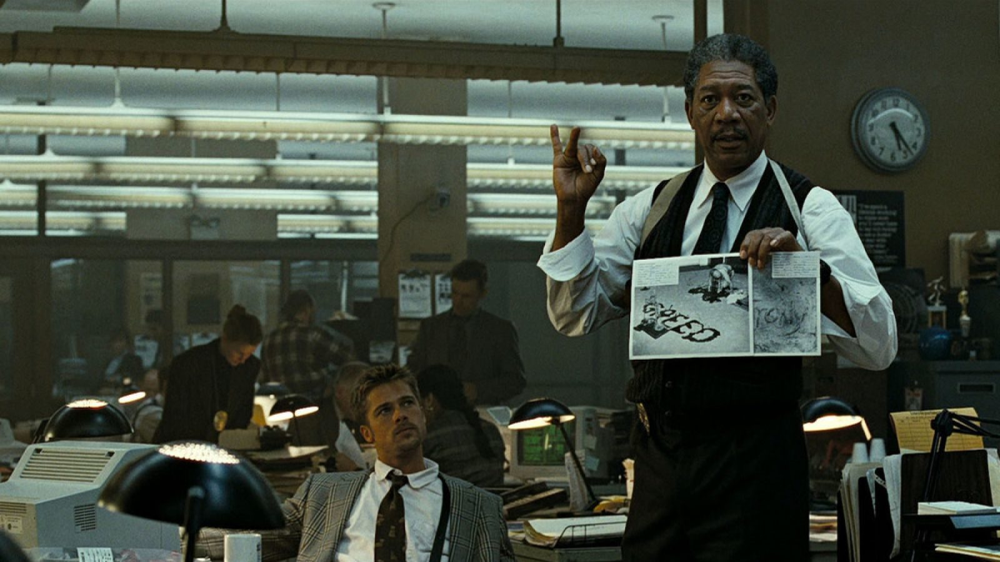
Семь
Детективы ловят маньяка, который убивает по семи смертным грехам. Поиск истины любой ценой.

Остров проклятых
Детектив расследует исчезновение пациентки на острове. Правда требует смелости и жертв.
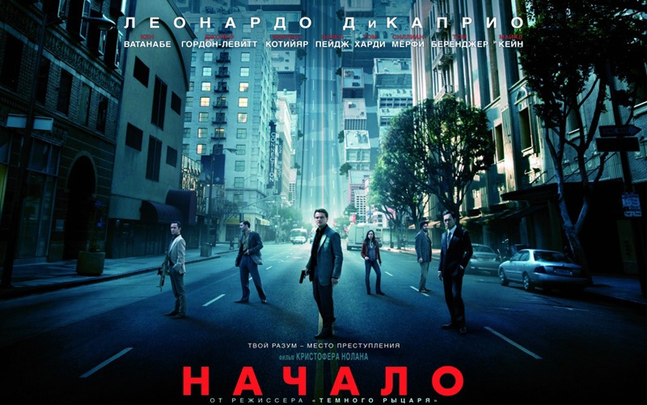
Начало
Вор крадет секреты из снов. Самый сложный заказ меняет его жизнь навсегда.
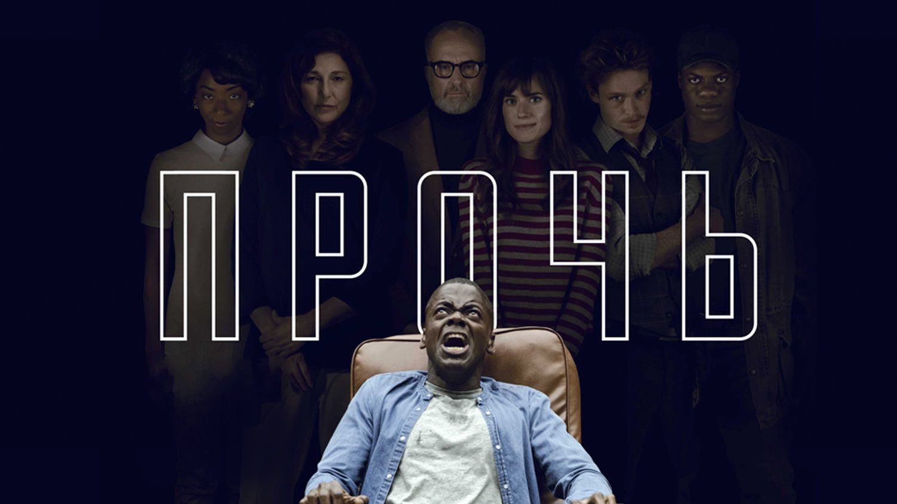
Прочь
Парень едет знакомиться с родителями девушки и попадает в страшную ловушку. Смелость раскрыть правду.
Приключения
Индиана Джонс: В поисках утраченного ковчега
Археолог ищет священный ковчег завета. Смелость, находчивость и жажда открытий.
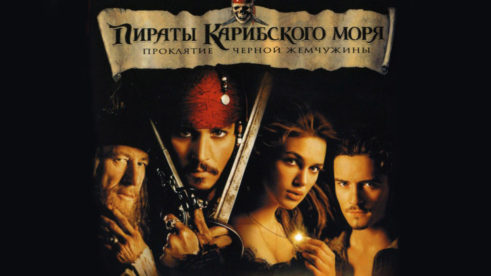
Пираты Карибского моря: Проклятие Черной жемчужины
Капитан Джек Воробей ищет сокровища и сражается с проклятыми пиратами. Свобода и приключения.
Жизнь Пи
Мальчик выживает 227 дней в океане с тигром. Вера и сила духа побеждают любые бури.

Король Лев
Симба возвращается на прародительские земли, чтобы стать королем. Принятие ответственности за свое предназначение.
Боевик

Джон Уик
Лучший убийца мира возвращается из отставки ради мести. Сила воли и мастерство.
Безумный Макс: Дорога ярости
Воин в постапокалиптическом мире борется за свободу. Выживание требует мужества.
Кровавый спорт
Ван Дамм участвует в подпольном турнире. Дисциплина и упорство ведут к победе.
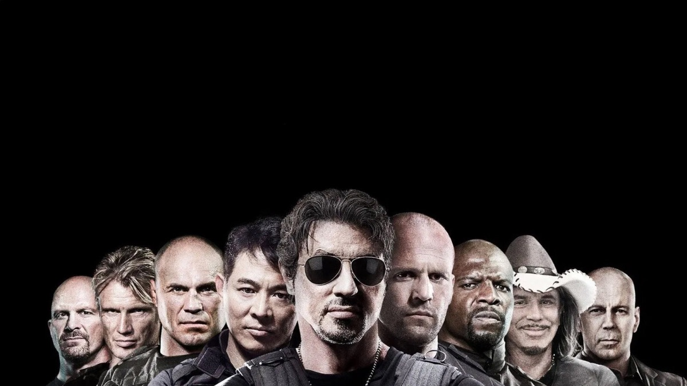
Неудержимые
Команда наемников выполняет невозможные миссии. Братство и сила команды.
Ужасы

Тихое место
Семья выживает в мире, где любой звук привлекает монстров. Любовь матери защищает детей.
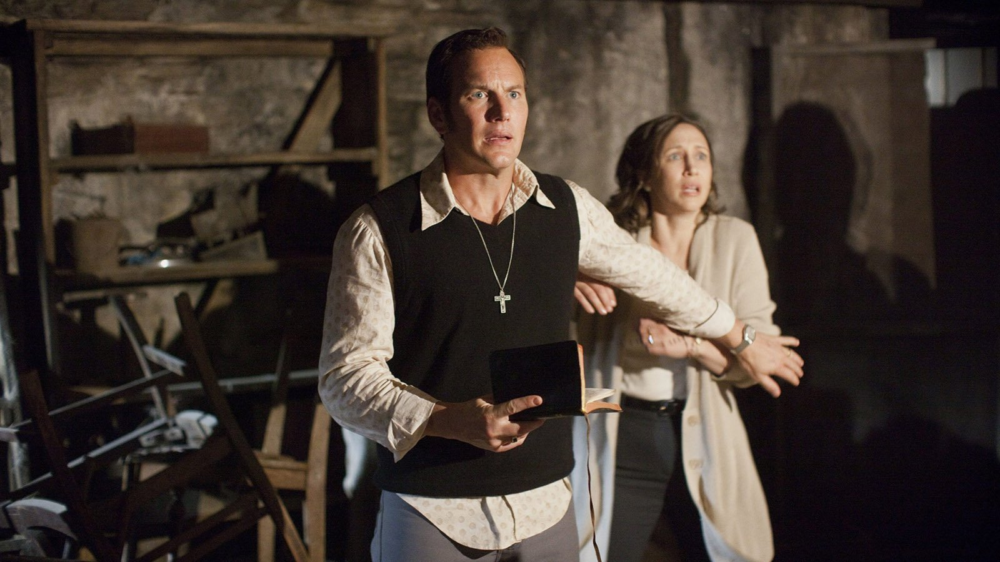
Заклятье
Экзорцисты борются с демоном в доме семьи Перрон. Вера побеждает зло.
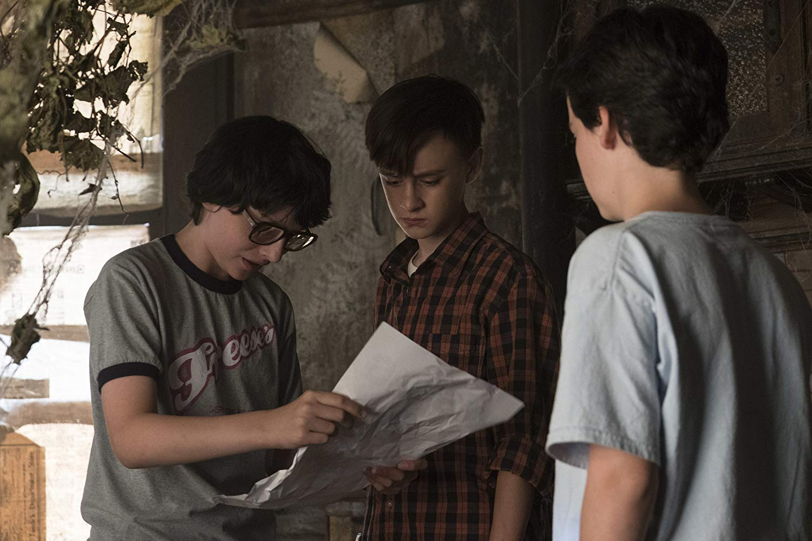
Оно
Дети объединяются против древнего зла. Дружба сильнее страха.
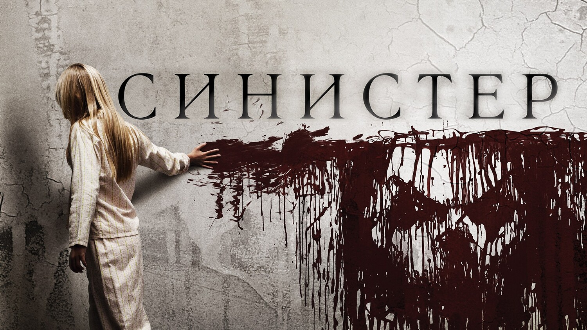
Синистер
Писатель находит пленки с убийствами. Смелость раскрыть страшную тайну.